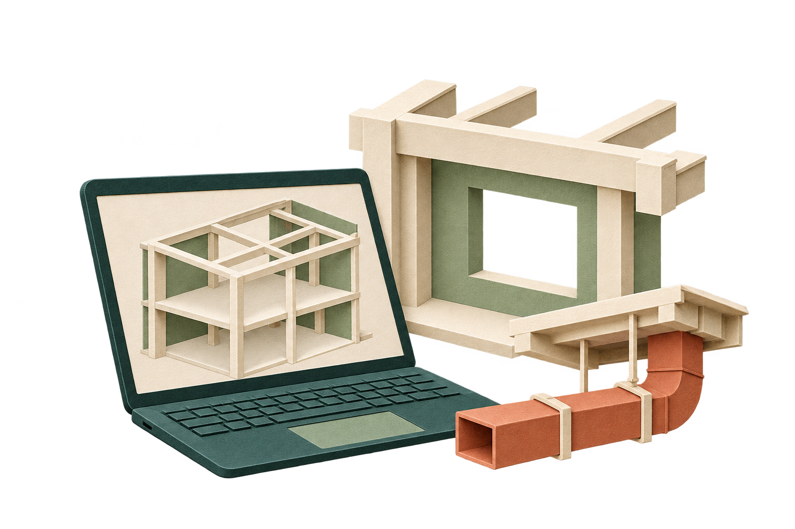
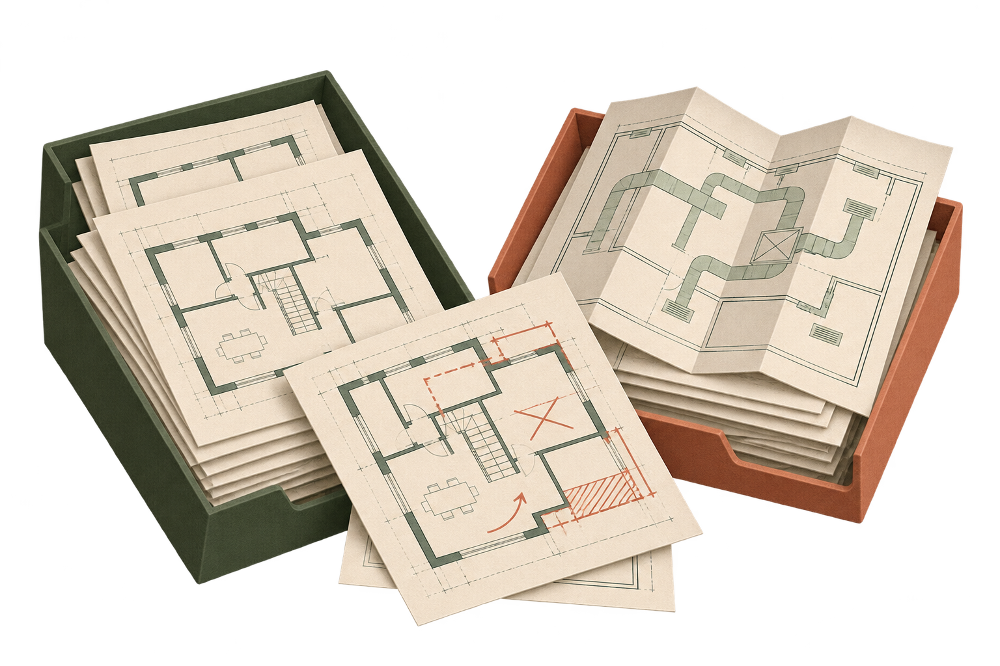
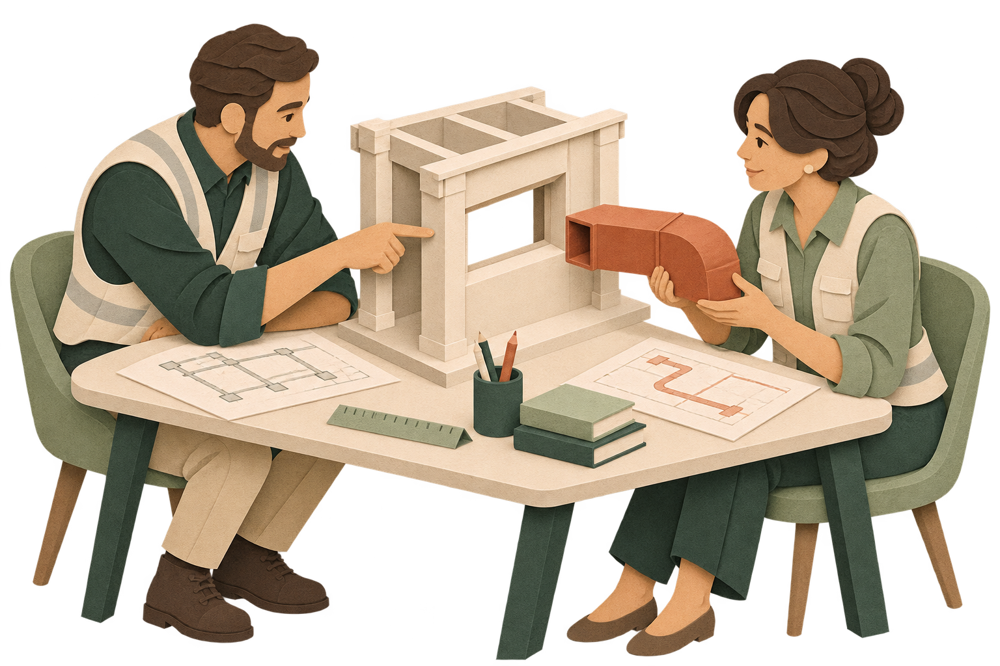
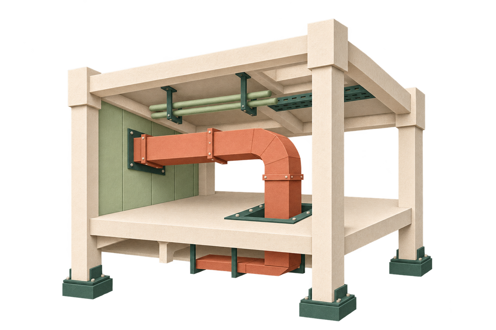

01
Building tools is only half the job
A small tool still needs the project data people already work with.

Ahmad Saleem Z
02

Two apps need the same data
Each new tool can mean another export, another copy, and another place to check what changed.
03
Use OCI to exchange project data
An existing standard for sharing published versions across tools and organizations.
Choose a version
Pass its exact reference to an app.
Open it in the app
Read the selected version from its registry.
Publish the result
Write to a registry you have access to.
04
One team’s output is the next team’s input
Teams can iterate on shared data from the tools and systems they already use.
- Services team proposes an opening change.
- Structural team publishes a revised model.
- Services team checks the new version.

05
IFClite and Subsoil
IFC models can travel through a registry. Subsoil shows how an app can open an exact version.

06
Build an app for your own workflow
Test it in Subsoil, then try a registry you control.
For your coding agent
Using the OCI handoff protocol proposed by Subsoil, build or adapt an app that [describe what you want the app to do].